Doorbell Camera Brands We Install & Support
We install whatever fits your door and your preference — whether you bought the unit yourself or want us to supply it. We’re brand-agnostic and set up local storage wherever a no-monthly-fee option exists.
Wired, Plus & Pro models — chime-connector wiring and transformer checks handled.
 Google Nest
Google NestWired and battery Nest Doorbell with on-device detection and Home app setup.
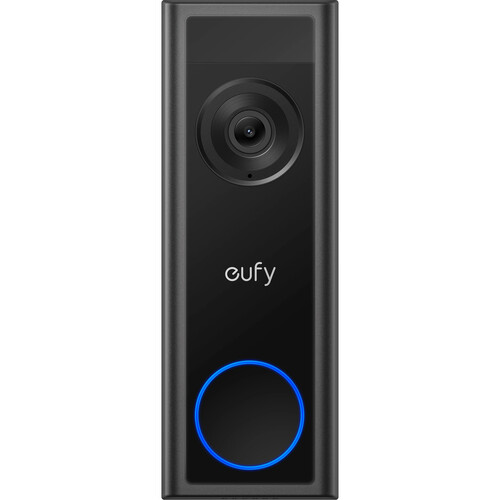
EufyLocal-storage favorite — HomeBase recording, no monthly fee. Wired and battery.
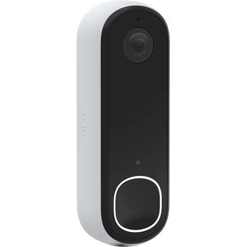
Arlo2K wire-free and wired video doorbells with wide head-to-toe field of view.
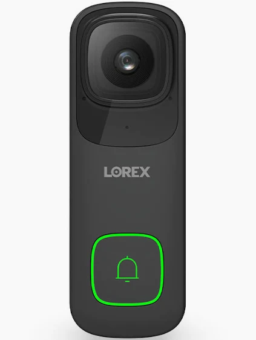
Lorex2K wired doorbells that record to a local NVR — pairs with a full camera system.
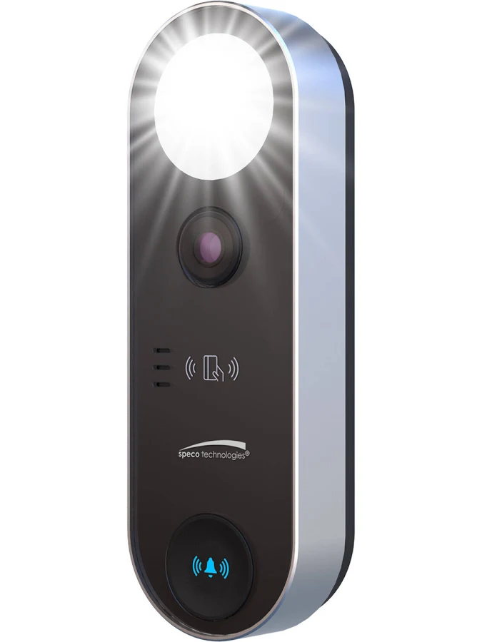
ReolinkPoE and Wi-Fi doorbells with local storage and no subscription.
 AOSU
AOSUBattery video doorbells with included chime — clean renter-friendly installs.
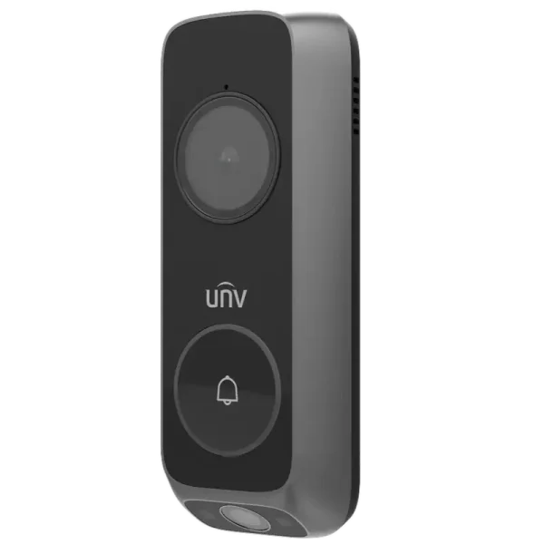
Uniview (UNV)Wi-Fi and PoE video doorbells that integrate with UNV recorders.
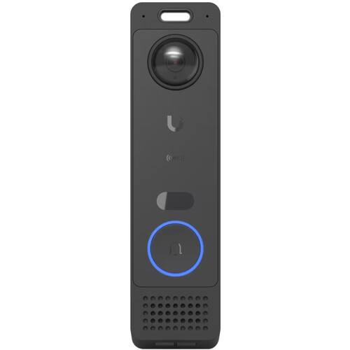
Ubiquiti UniFiG6 Entry door station for UniFi Protect — pro-grade local recording.
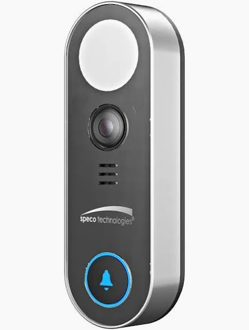
Speco TechnologiesFloodlight video doorbells for storefronts and pro security integrations.
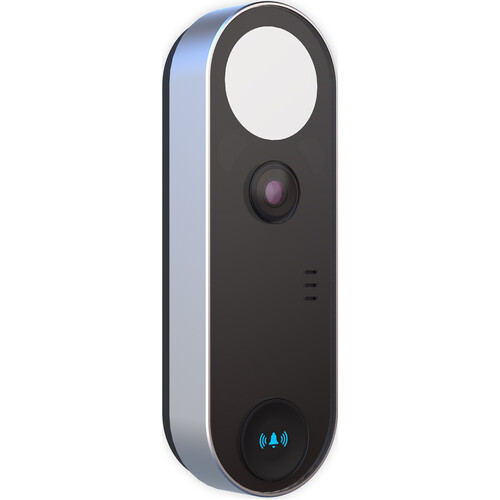
Digital WatchdogMEGApix InterCam 2.1MP IP video intercom door station for commercial entries and access integration.
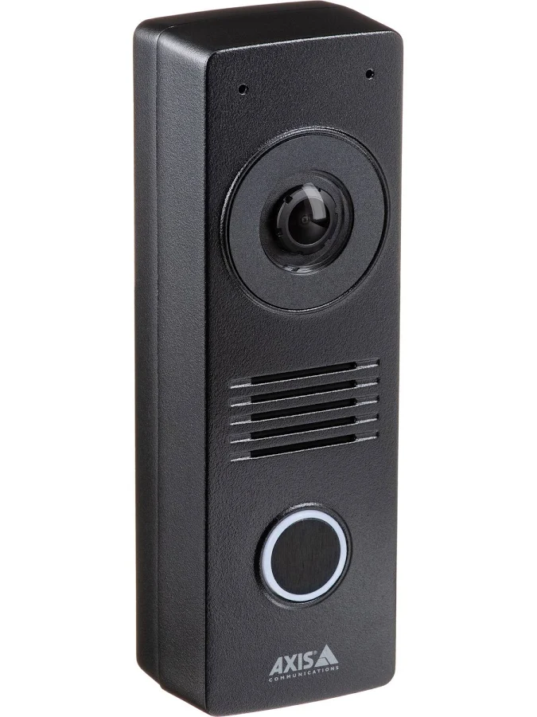
Axis CommunicationsI8116-E network video intercom — commercial-grade door entry over IP.
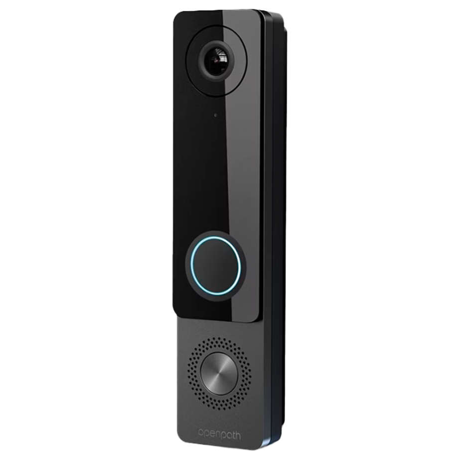
AvigilonAVI-OP video door entry with integrated access reader for managed buildings.
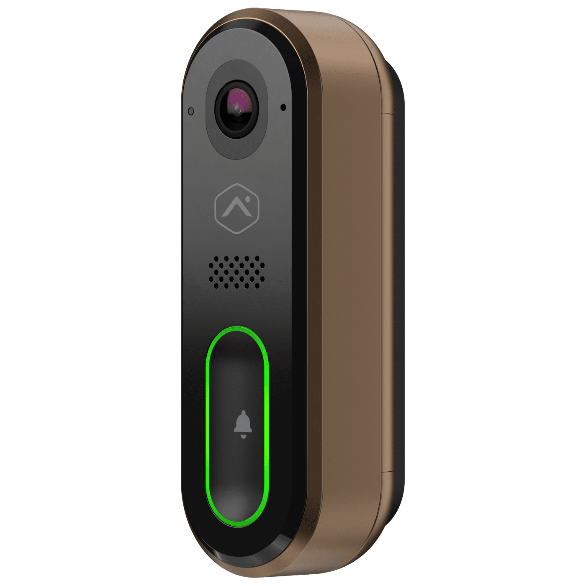
Alarm.comVDB750/770/775 video doorbells for monitored alarm and smart-home accounts.
 Hanwha Wisenet
Hanwha WisenetWisenet video doorbells for pro CCTV and enterprise security stacks.
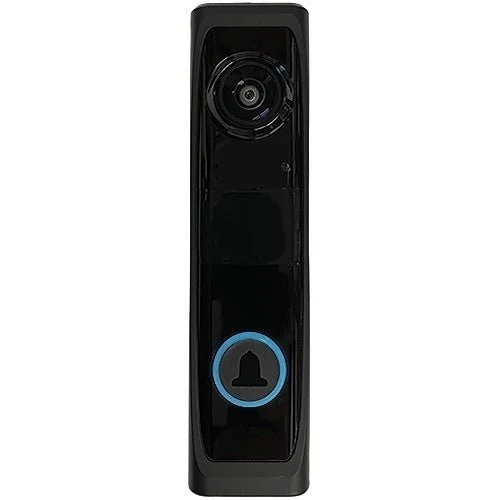
NapcoPBELL self-healing Wi-Fi HD doorbell for alarm-dealer installations.
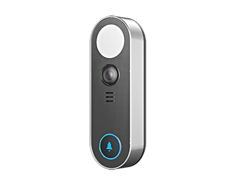
InVidIP video doorbells for commercial surveillance and access projects.
 TVT / Super Live Plus
TVT / Super Live PlusTVT video doorbells viewed in the Super Live Plus app with local recording.
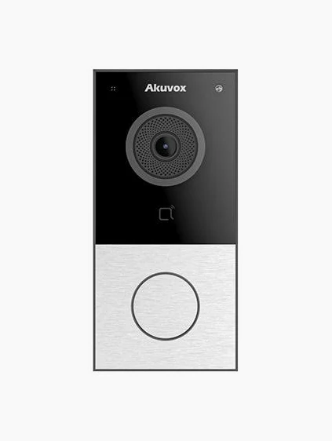
Akuvox & AiphoneVideo door stations that behave like a proper entry intercom with card access.
Video Doorbell Pro — wired install with chime-connector and transformer check.
Wi-Fi video doorbells for residential entries with two-way talk and motion alerts.
ecobee Smart Video Doorbell (wired) — integrates with ecobee smart-home and thermostat ecosystem.
PoE and Wi-Fi doorbells that integrate with existing camera recorders.